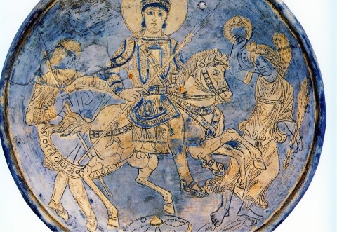
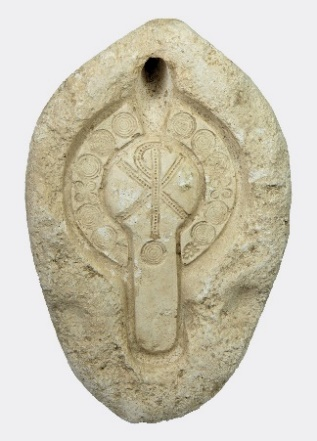
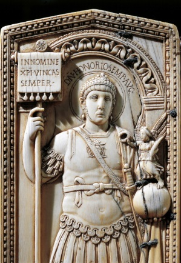
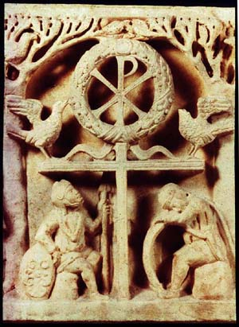
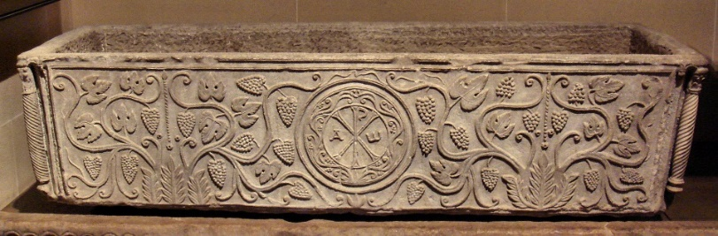
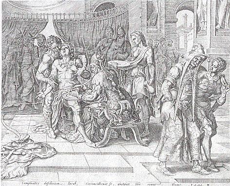
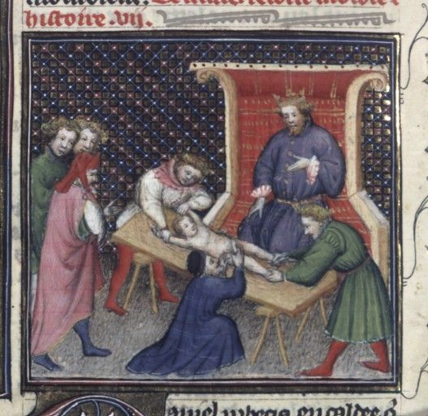
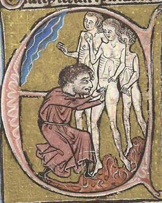

As the Roman Catholic Church grew and gained more prominent within the empire, so did the appearance of the Catholic Cross, their pagan symbol of religious worship that eventually overshadowed the Chi-Rho.
Having established earlier that Constantine had a fascination and respect for the ever-growing Christian movement (just as long as it didn’t lead to unrest and violence within the Empire), he wasn’t the only one who was drawn to this new religion. True Christians were mindful not to fall into the trap of latching onto pagan (ungodly) signs and symbols for Christian worship, and Constantine, not a true spiritual/confirmed believer, found himself doing the same. The Chi-Rho symbol was never a physical image or object to be used for the purpose of worship, but merely a representation for showing appreciation for Christ, the Son of God. And seeing as Christ was apt at using illustrations to draw people to his Heavenly Father, why couldn’t the Chi-Rho (XP) have been used for the same purpose by Christ’s followers? It was! Except, the Jupiter Trinity (with a military following) was later assimilated into a purpose more fitting for Catholicism.

Chi-Rho plate featuring Emperor Theodosius

Christian Chi-Rho oil lamp

Diptych of Probus (with Chi-Rho symbol)

Labarum drapery lost in battle

Ancient Christian, Chi-Rho sarcophagus
The sexual depravity of Pope Julius III was not hidden from the Catholic Church by any means! He exploited it in a fresco commissioned by painter Peitro Venale, which can be seen today in Rome by many millions of tourists who visit Julius’ old house of pleasure, the Villa Giulia. The old fresco features, believe it or not, a boy masturbating another, while perched on a vine trellis. The boys don’t appear to have any wings, so we can only assume that these non-cherubs must have been the much-preferred manifestation from the minds of Popes. The coin below is not an advertisement for a recent costume party in San Francisco, but is a commemorative coin celebrating the day when Julius was ordained as the Pope, Head of the Roman Catholic Church. And get this! Pope Julius was the inventor of the Sacrament of Confession. Yikes! The Church must have thought that this pontiff was so super-righteous that he was untouchable by God. The Babylonian ruler Nimrod lost his Tower of Power due to nothing short of narcissism and blasphemy. Could there be a repeat of that soon…?
Pope Benedict VI He was strangled to death in 974AD. The power struggle turmoil inside the Church in past centuries was not that much different than the ones within the Roman Empire, except it was done on a more secretive level. But the truth sooner or later comes out. This Pope’s killer—a Catholic priest.
Pope John XIV He was arrested, beaten, and imprisoned. After spending a long time being locked up, John eventually died of starvation. The pontiff’s death was ordered by antipope Boniface VIII in 984AD.
Pope Boniface VII He was, for some undetermined reason, disliked by quite a number of Catholics. After he died, his corpse was dragged naked through the streets and a crowd stabbed it with spears.
Pope John VIII He was poisoned and beaten to death. The pontiff was killed by one of his own clerics.
Pope Lucius II In 1145AD, the pontiff gathered his papal army to quash an uprising, which was sparked by the Senate of Rome who resented the rise of power within the Church. Lucius was hit on the head by a stone and killed.
Pope John XXI In 1277AD, the pontiff needed a much bigger study built at the papal palace to cope with his ever-increasing hunger for…hmm, hard to tell with these Popes. Having hurried his workers to get the job done, the botched ceiling collapsed, killing Pope John, while God must have been looking the other way, possibly distracted with more important matters…or people, perhaps???
Castration was a practice common in the Middle Ages, which became something endorsed by the Catholic Church. It was usually done for two main reasons—to curb the unrestrained sexual desires of serial rapists and unrepentant thugs, and to ensure the longevity of the angelic-like voices of singing Church choir boys. It was done mostly by the local barbers, but when their obligation to the Church began to dwindle, Catholic priests were trained to continue the procedure. One Medieval barber in Rome was known to have had a
sign outside of his place of employment that read: “Castration Done Here For Papal Choir.”

Roman Catholic priest castrator

King and clergy officiating the forced castration of a boy
During the 1950’s, 10 Dutch teenage boys and young men under the age of 21 were surgically castrated in the Roman Catholic Church’s attempt to rid homosexuality inside a Catholic boarding home. Henk Heithus, 20, reported the abuse to the police, but they ignored it and transferred Henk to a Catholic psychiatric hospital. While there, Henk was castrated. He died two years later in a car accident. The hospice staff claimed that Henk wanted to be castrated, and they didn’t think that his parents needed to be informed prior to the procedure. An investigation uncovered 1,800 reports of rampant sexual abuse by the clergy and volunteers within Dutch Catholic dioceses in a period since 1945.

Medieval castration by clergy